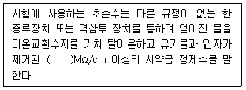
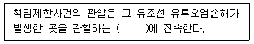

해양환경기사 (2017-05-07 기출문제)
1과목: 해양학개론
1. 에크만 취송류 모델에서 마찰영향심도(depth offrictional influence)는?
- 위도와 관계없으며 풍속이 커지면 증가한다.
- 같은 풍속이면 위도가 증가함에 따라 증가한다.
- 풍속에 관계없으며 위도가 증가하면 감소한다.
- 풍속이 커지면 증가하며, 위도가 증가하면 감소한다.
(정답률: 84%)

2. 대양에서 산소 최소층(Oxygen minimum layer)이 존재하는 수심은?
- 0~300m
- 700~1000m
- 1200~1500m
- 1500~1800m
(정답률: 82%)
3. 대양저산맥(mid-oceanic ridge)은 어원 그대로 대양의 중심부에 위치한다. 다음 중 중심부에 대양 저산맥이 위치하지 않는 바다는?
- 대서양
- 인도양
- 태평양
- 모두 중심부에 위치함
(정답률: 74%)
4. 다음 중 대서양형 대륙주변부의 특징을 나타내는 것으로 적당하지 않는 것은?
- Seismic
- Passive
- divergent
- not a plate boundary
(정답률: 79%)
5. 좁은 해협을 통하여 외양과 연결되는 만에서 증발량이 많을 경우 해협에서의 해수운동은?
- 전층에서 만으로 유입하는 운동
- 전층에서 외양으로 유출하는 운동
- 상층은 만으로 유입, 하층은 외양으로 유출
- 상층은 외양으로 유출, 하층은 만으로 유입
(정답률: 89%)
6. 표면수온이 20℃인 해면으로부터 방출되는 장파열 복사(black body radiation) 에너지는 표면 수온이 10℃인 해면으로부터 방출되는 장파열 복사에너지의 몇 배 정도인가?
- 약 1.00배
- 약 1.15배
- 약 1.50배
- 약 2.00배
(정답률: 72%)
7. 열대저기압에 대한 설명으로 틀린 것은?
- 서태평양에서는 태풍이라고 부른다.
- 열대 남대서양에서는 발생하지 않는다.
- 오스트레일리아에서는 허리케인이라 부른다.
- 열대해상에서 발원하여 등압선이 동심원을 그리며 중위도로 이동한다.
(정답률: 80%)
8. 천해파(shallow sea wave)의 파속(phase speed)과 수심과의 관계를 가장 올바르게 설명한 것은?
- 파속은 수심과 무관하다.
- 파속은 수심에 반비례한다.
- 파속은 수심에 정비례한다.
- 파속은 수심의 제곱근에 비례한다.
(정답률: 89%)
9. 파랑의 에너지에 대한 설명으로 옳은 것은?
- 에너지는 파고에 비례
- 에너지는 파장에 비례
- 에너지는 파고의 제곱에 비례
- 에너지는 파장의 제곱에 비례
(정답률: 83%)
10. 지진이 일으키는 파 중 가장 빠른 속도로 전해져서 어떤 지점이든 가장 먼저 도달하는 실체파(body wave)는?
- P파
- S파
- 러브파
- 레일리파
(정답률: 94%)
11. 북회귀선에서 적도근처까지의 해면을 서류하는 우세한 난류는?
- 적도 반류
- 북적도 해류
- 남적도 해류
- 아라스카 해류
(정답률: 80%)
12. 해수 중 탄소의 방사성 동위체 농도를 측정함에 의해 간접적으로 해수의 연령을 알 수 있다. 다음중 연령이 가장 오래된 것은?
- 대서양북부의 심층수
- 대서양북부의 중층수
- 태평양북부의 심층수
- 태평양북부의 중층수
(정답률: 85%)
13. 다음 산호초의 형태 중 발달단계로 보아 가장 나중에 만들어지는 것은?
- 거초
- 보초
- 초호
- 환초
(정답률: 93%)
14. 해수의 표층밀도(σt)는 대체로 22~27의 범위에 있다. 각 지역별 설명 중 옳은 것은?
- 적도부근에서 최소값을 가진다.
- 아열대해역에서 최대값을 가진다.
- 북쪽 고위도일수록 점차 감소한다.
- 적도에서 위도 50~60°까지 점차로 감소한다.
(정답률: 70%)
15. 해수의 구성성분 중에서 비보존성 성분이 아닌것은?
- 인
- 산소
- 염소
- 질소
(정답률: 77%)
16. 다음 중 초호의 가장 큰 특징에 속하는 것은?
- 담수 유입이 없다.
- 저염분의 해수이다.
- 해류순환이 가능하다.
- 바다와 직접적인 통로가 있다.
(정답률: 69%)
17. 다음 중 곤드와나(Gondwana) 대륙에 해당하지 않는 것은?
- 인도
- 호주
- 하와이
- 마다가스카르
(정답률: 73%)
18. 1차적 퇴적구조 중 사층리(Cross-bedding)가 가장 많이 나타날 수 있는 퇴적환경은?
- 대륙붕
- 심해저
- 하구환경
- 조간대환경
(정답률: 67%)
19. 진자일(Pendulum day)을 결정하는 요인은?
- 고도
- 위도
- 진자축의 길이
- 지구내부구조
(정답률: 68%)
20. 역학적 해류계산(Dynamic computation)에서 얻어지는 해류는?
- 조류
- 관성류
- 지형류
- 취송류
(정답률: 79%)
2과목: 해양생태학
21. 연성기질에 서식하는 생물이 아닌 것은?
- 거미불가사리
- 쏙붙이류
- 대양조개
- 삿갓조개류
(정답률: 77%)
22. 어류의 분포에 직접적인 영향을 주는 조건이 아닌 것은?
- 수온
- 먹이생물
- 염분도
- 파랑
(정답률: 85%)
23. 다음 중 생물교란이 주변 환경에 미치는 영향을 파악하는데 중요한 요인으로 가장 거리가 먼 것은?
- 대상생물의 그 지역에서의 밀도와 생물량
- 군집 내에서의 부유물식자와 퇴적물식자의 조성
- 대상생물의 서식깊이 등의 생태적 특성
- 생물과 무기환경 요인과의 관계
(정답률: 74%)
24. 다음 중 부레를 갖지 않는 어종은?
- 상어
- 참조기
- 대구
- 참돔
(정답률: 88%)
25. 고래가 바닷물 속에서 생활을 할 수 있게 적응한 방법이 아닌 것은?
- 폐에서 질소를 흡수한다.
- 신장에서 염을 제거할 수 있다.
- 물 속에서 심장박동이 활발하다.
- 혈액의 산소 저장능력이 크다.
(정답률: 91%)
26. 적조를 일으키는 와편모조류에 많이 존재하는 색소는?
- DInoxanthin
- Fucoxanthin
- Canthaxanthin
- Zeaxanthin
(정답률: 78%)
27. 지구의 온난화와 그로 인한 영향의 설명으로 옳지 않는 것은?
- 지구의 온난화란 대기권에 이산화탄소, 메탄, 질소산화물, 그리고 CFC(chlorofluorocarbon)와 같은 특정 가스가 증가하여 지구의 기온이 상승하는 것을 말한다.
- 지구 온난화의 결과는 강우와 폭풍우의 패턴을 바꾸고, 해류를 변화시키고, 해수면이 상승하는 속도를 높인다.
- CFC에 의해 촉진된 남극 상공의 오존층의 파괴는 자외선 양의 증가를 초래하고, 이것은 식물플랑크톤에 의한 1차 생산력을 감소시킨다.
- 지구온난화로 인한 해수면 상승과 저지대 및 습지의 범람에 대응하기 위하여 연안역에 집중되는 인구 및 산업활동 등에 특별한 대책이 필요하며, 특히 이산화탄소를 발생시키는 세계 열대우림 지대의 대규모 벌목은 더 이상 계속해서는 안된다.
(정답률: 80%)
28. 수괴(water masses)의 지표종으로 흔히 사용되는 화살벌례(arrow worms, Sagitta)가 속하는 동물문은?
- 연체동물문
- 모악동물문
- 절지동물문
- 극피동물문
(정답률: 86%)
29. 하구역의 생태적 특징에 대한 설명으로 틀린 것은?
- 유기쇄설입자가 어류나 대형저서동물의 먹이가 된다.
- 생활하수가 유입될 경우 유기오염이 될 수 있다.
- 염분농도에 의해 분포가 결정된다.
- 하구역 저서동물은 하구역내에서 생활사를 완결한다.
(정답률: 90%)
30. 육상생태계에 비해 해양에 서식하는 생물의 특성과 거리가 먼 것은?
- 크기가 작고 생활사가 짧다.
- 1차 소비자인 동물의 크기가 작다.
- 먹이사슬의 길이가 짧다.
- 생물의 분포가 물의 움직임과 관련된다.
(정답률: 84%)
31. 반폐쇄적인 연안에서 유기물로 인한 오염현상이 발생하였을때 저서생태계에 일어나는 현상이 아닌것은?
- 생체량이 큰 개체들이 출현한다.
- 종 다양도가 낮아진다.
- 기회종의 우점도가 높아진다.
- 저서성 다모류 츨현비율이 높아진다.
(정답률: 86%)
32. 해양의 동물 플랑크톤 중 그 양이 가장 많은 것은?
- 단각류
- 요각류
- 난바다곤쟁이류
- 모악동물류
(정답률: 87%)
33. 다음 중 이빨고래가 아닌 것은?
- 향유고래
- 돌고래
- 범고래
- 대왕고래
(정답률: 74%)
34. 심해 산란층(Deep scattering layer) 생성의 주요 원인 생물은?
- 규조류(Diatom)
- 유파우시아(Euphausia)
- 와편모조류(Dinoflagellata)
- 야광충(Noctiluca)
(정답률: 80%)
35. 중형저서동물은 다양한 식성을 나타내는데 어떤 식정이 가장 많이 나타나는가?
- 포식자
- 미세조류식자
- 유기쇄설물식자
- 현탁물식자
(정답률: 61%)
36. 해양에서만 서식하는 종으로 구성된 동물군은?
- 원생동물
- 강장동물
- 연체동물
- 극피동물
(정답률: 86%)
37. 적조가 발생했을 때 일반적으로 일어나는 현상으로 옳은 것은?
- 산소가 점차 감소하고 유화수소가 발생한다.
- 산소가 계속 증가하고 유화수소는 감소한다.
- 산소가 증가하므로 암모니아가스는 줄어든다.
- 플랑크톤의 번식이 일어나서 어류가 모여든다.
(정답률: 89%)
38. 어류의 해양 분포에 대한 설명으로 옳지 않는 것은?
- 위도에 따라 어류의 분포가 달라진다.
- 같은 위도라도 계절이나 환경에 따라 어류의 분포가 다르다.
- 연안이나 원양에 따라 어류의 분포는 달라진다.
- 위도나 계절은 어류분포에 영향을 주어도 연안이나 원양의 어류분포는 같다.
(정답률: 88%)
39. 우리나라 연성 기질의 갯벌 생태계에 서식하는 저서생물 군집의 분포를 결정하는 중요한 환경요인과 가장 거리가 먼 것은?
- 조위
- 온도
- 포식
- 저질의 입도
(정답률: 72%)
40. 갯벌에 서식하는 이매패류에 대한 설명으로 맞는 것은?
- 환경의 교란과 강한 스트레스 때문에 성장기간이 짧다.
- 생물량에 대한 생산량의 비가 크다.
- 크기에 비해 낮은 서식밀도와 생물량을 나타낸다.
- 퇴적물과 수(水)의 경계면에서 물질수송을 담당한다.
(정답률: 78%)
3과목: 해양계측학
41. 조류의 유속 1노트(knot)를 미터법으로 환산하면 대략 어느 정도 되는가?
- 15 cm/sec
- 25 cm/sec
- 50 cm/sec
- 100 cm/sec
(정답률: 65%)
42. 해안부근에서 창조류(flood current)는 어느 때 나타나는가?
- 저조시
- 고조시
- 저조에서 고조사이
- 고조에서 저조사이
(정답률: 84%)
43. 해수의 밀도는 수온, 염분 및 수압에 의해 결정되는데, 일반적으로 수온과 염분의 증가에 따른 밀도의 변화는?
- 수온증가 → 밀도감소, 염분증가 → 밀도감소
- 수온증가 → 밀도감소, 염분증가 → 밀도증가
- 수온증가 → 밀도증가, 염분증가 → 밀도감소
- 수온증가 → 밀도증가, 염분증가 → 밀도증가
(정답률: 81%)
44. 조석자료를 조화분석한 후, 조화분석에서 얻어진 조화상수로 관측과 같은 기간의 조석을 다시 추산하여 이를 관측치로부터 뺀 값을 일반적으로 무엇이라 하는가?
- 오차
- 조석잔차
- 절대편차
- 상대편차
(정답률: 87%)
45. 망간단괴 등 큰 덩어리의 채취에 가장 적합한 것은?
- Grab
- Corer
- Dredge
- Snapper
(정답률: 83%)
46. 다음 중 수직적으로 가장 긴 주상시료를 얻을 수 있는 장비는?
- 드레지
- 반빈그랩
- 박스 코어러
- 피스톤 코어러
(정답률: 91%)
47. 해표면의 수온분포 관측을 위해 사용되고 있는 열적외선은 AVHRR의 몇 번째 채널에서 감지하는가?
- 1
- 2
- 3
- 4
(정답률: 83%)
48. 거리가 떨어져 있는 두 전극을 이용하여 전극사이의 해수의 흐름의 변화에 따른 전도성 변화를 측정하여 유속을 측정하는 기기는?
- XBT
- GEK
- ADCP
- ARGO float
(정답률: 80%)
49. 수온-염분 도표(T-S diagram)로부터 알 수 없는 것은?
- 수직안정도
- 수괴의 혼합
- 심층해수 순환
- 대기나 해저에 의한 수괴의 변질
(정답률: 89%)
50. 조석자료의 분석에서 잔여치가 조석과 비슷한 주기의 Oscillation을 보이는 경우에 대한 설명으로 틀린 것은?
- 조석계의 시계작동이 불량하다.
- 관측 자료상의 시간 오차가 있다.
- 조석의 각 분조를 분리해 내기에 관측자료의 길이가 길다.
- 추출해내는 분조의 선택이 잘못되어 현재의 조화분석으로는 조석성분을 충분히 추출해내지 못했다.
(정답률: 67%)
51. 퇴적물의 입도분석 자료로부터 퇴적물 유형(sediment type)을 구하는 방법 중 맞는 것은?
- 입도를 ø 단위로 표시하여 모멘트(moment) 계산법을 한 다음 입도분포 특성 지수를 구한다.
- 입도를 ø 단위로 표시하여 입도 누적곡선을 이용한 도표 계산법으로 입도분포 특성지수를 구한다.
- 자갈(gravel), 모래(sand), silt 및 clay의 함량을 구하여 3각 다이아그램(diagram)상에 플로팅 한다.
- 자갈(gravel), 모래(sand), silt 및 clay의 함량을 구분하여 입도 누적곡선을 이용한 도표 계산법을 적용한다.
(정답률: 82%)
52. 다음 중 대기의 창에 해당되는 영역은?
- 자외선
- 적외선
- 가시광선
- 마이크로파
(정답률: 79%)
53. 수심 200m 인 곳에서 파장 100m 인 파의 주기는?
- 약 2.2초
- 약 4.0초
- 약 5.6초
- 약 8.0초
(정답률: 63%)
54. 해류의 원동력은 주로 어디서 오는가?
- 바람
- 파랑
- 조석력
- 수온차
(정답률: 82%)
55. 해수의 온도를 측정하는 매질이나 기기들의 원리를 설명한 것으로 틀린 것은?
- MBT - 고체의 열팽창
- 전도온도 - 수은 열팽창
- 백금저항 - 온도에 따른 전기저항 변화
- Thermistor-Semiconductor - 반도체의 온도에 따른 전기저항 변화
(정답률: 65%)
56. 수심이 깊은 해역에서 10km 떨어진 두 정점사이의 해수면 높이의 차가 10cm이라고 하면 유속은 얼마인가? (단, 코리올리 인자는 10-4/sec, 중력가속도는 10m/sec2로 하고 대기의 영향은 무시한다.)
- 0.1 cm/sec
- 1.0 cm/sec
- 10 cm/sec
- 100 cm/sec
(정답률: 59%)
57. 다음 중 조직 성숙도가 미성숙에 속하지 않는 퇴적층은?
- 빙퇴적층
- 테일러스층
- 삼각주 퇴적층
- 해저 슬라이딩 퇴적층
(정답률: 82%)
58. 가시광선의 파장 범위로 옳은 것은?
- 400~700 pm
- 400~700 nm
- 400~700 mm
- 400~700 cm
(정답률: 87%)
59. 지층의 구조 및 구성암석을 파악하기 위하여 사용되는 기기는?
- 핵 자력계
- 음파 탐사기
- 수중 글라이더
- Side scan sonar
(정답률: 54%)
60. 조석 관측시 필요한 TBM(Tidal Bench Mark)이란 무엇인가?
- 육상의 고정점
- 평균해면의 표식
- 표척의 0점 표식
- 조위계의 0점 표식
(정답률: 66%)
4과목: 해수의 수질분석
61. 해수의 화학적산소요구량 측정법에 대한 설명중 틀린 것은?
- 해수중의 유기물의 양을 간접적으로 나타낼 수있다.
- 유기물의 난분해성 정도와 염분 등의 간섭조건에 따라 산화정도의 차이가 크다.
- 시료중의 유기물을 산화제를 사용하여 화학적으로 산화시킬때 소비되는 산소량을 나타낸다.
- 중크롬산칼륨법은 강력한 산화제를 사용함으로써 상대적으로 산화효율이 높아 주로 사용된다.
(정답률: 71%)
62. 다음은 해수공정시험의 초순수에 관한 사항이다. ( ) 안에 적절한 것은?

- 14
- 16
- 18
- 20
(정답률: 78%)
63. 규산규소 측정을 위해 채수한 해수의 보관용기로 가장 적절한 것은?
- 금속용기
- 유리용기
- 석영용기
- 폴리에틸렌 용기(HDPE)
(정답률: 85%)
64. Cu 성분을 측정하고자 할때 시료의 농도가 측정 장비의 최대 측정범위를 넘는 경우 다음 중 가장 적절한 조치는?
- 추출용매의 양을 줄인다.
- 유기착화제의 혼합용액을 바꾼다.
- 1N 질산용액으로 희석하여 측정한다.
- 증류수로 희석시켜, 추출한 후 분석한다.
(정답률: 76%)
65. 최확수시험법에 의한 대장균군 시험방법에 대한설명 중 틀린 것은?
- 정성시험은 추정시험, 확정시험의 2단계로 나누어 시험한다.
- 추정시험에서 발효관의 수는 각 희석액에 따라 5개씩 시험한다.
- 확정시험에서 무균조작으로 BGLB 배지에서 48±3시간 배양하여 가스가 발생하면 양성으로 한다.
- 추정시험에서 배양하여 발효관에 가스발생이 있으면 대장균군이 존재하는 것으로 간주한다.
(정답률: 79%)
66. 해수시료를 알칼리성으로 하여 산화제인 과망간산칼륨을 이용하여 실험하는 화학적산소요구량(COD) 실험방법에 대한 내용 중 틀린 것은?
- 0.025N 티오황산나트륨용액으로 무색이 될 때까지 적정한다.
- 녹말을 넣는 것은 종말점을 쉽게 확인하기 위해 넣는 것인다.
- 시료를 알칼리성으로 하기 위하여 20% 수산화나트륨용액 1mL를 첨가한다.
- 발생시약을 넣고 둥근바닥 플라스크에 냉각관을 붙여 끓는 수욕 중에 20분간 가열한다.
(정답률: 69%)
67. 해양 퇴적물의 산휘발성황화물(AVS)을 황검지관법으로 정량할 때 측정한계는?
- 0.1 mg/gㆍdry
- 0.01 mg/gㆍdry
- 0.⑤ mg/gㆍdry
- 0.0⑤ mg/gㆍdry
(정답률: 61%)
68. 특정 유해물질 분석을 위한 전처리 방법으로 틀린 것은?
- TBTs : 유리용기에서 냉장 보관한다.
- 유기인 : 차광유리용기에서 냉장 보관한다.
- 페놀류 : 인산용액으로 pH를 약 4로 조절한다.
- PCBs : 질산을 첨가하여 pH 2 이하로 만들어서 냉장보관한다.
(정답률: 64%)
69. 다음 중 시험 시 가열 증류장치가 필요한 것은?
- 철
- 시안
- 알킬수은
- 아질산성질소
(정답률: 80%)
70. 다음 중 여과한 클로로필 a 시료를 곧바로 분석하기 불가능한 경우 보존방법으로 가장 적절한 것은?
- GF/F 여과 후 여과지를 0℃ 냉동 보관
- GF/F 여과 후 여과지를 -4℃ 냉동 보관
- GF/F 여과 후 여과지를 -20℃ 냉동 보관
- GF/F 여과 후 여과지를 -70℃ 냉동 보관
(정답률: 61%)
71. 해수 중 무기수은 분석방법에 관한 설명 중 옳은 것은?
- 무기수은을 NaBH4로 처리한 후 냉증기 - 원자흡광광도법으로 측정한다.
- 무기수은을 과망간산칼륨법으로 산화시킨 후 냉증기 - 원자흡광도법으로 측정한다.
- APDC/DDDC 킬레이트제로 처리한 후 MIBK유기용매로 추출한 후 불꽃 원자흡광광도법으로 측정한다.
- 무기수은을 염화제일주석으로 처리하여 금속수은으로 환원시킨 다음 알곤기체를 불어넣어 수은포집장치에 포집한 후 냉증기 - 원자흡광광도법으로 측정한다.
(정답률: 62%)
72. 다음 원유성분 중 담수 내 용해도가 가장 큰 것은?
- 석유(kerosene)
- 휘발유(gas oil)
- 윤활유(lube oil)
- 비튜멘(bitumen)
(정답률: 64%)
73. 탄소량을 측정하는 방법 중 틀린 것은?
- 퇴적물을 고온으로 가열하여 무게차를 측정하는 방법
- 입자들을 일정한 크기별로 분리하여 질량을 측정하는 방법
- 시약과 반응시킨 후 퇴적물에서 발생한 이산화탄소를 측정하는 방법
- 강한 산화제를 이용하여 탄소화합물을 선택적으로 산화시켜 그 무게를 알아내는 방법
(정답률: 78%)
74. 분석자료의 통계처리와 표현 방법에 대한 설명으로 틀린 것은?
- 정확도는 참값과 측정값과의 편차를 의미한다.
- 정밀도는 일정값을 반복 측정하였을 때의 무작위적인 분산오차로 표현된다.
- 표준편차는 복수시료 측정 시 평균값을 중심으로 한 분산정도를 나타낸다.
- 검출한계는 바탕용액 농도의 표준편차에 95%신뢰구간에 해당되는 확률변수를 곱한 값이다.
(정답률: 62%)
75. 세키 디스크(Secchi disc)로 측정하는 해수의 수질지수는?
- 밀도
- 염분
- 투명도
- 전기전도도
(정답률: 83%)
76. 해수 중 암모니아 질소의 측정원리에 관한 설명으로 잘못된 것은?
- 최대 흡수파장인 543nm에서 최종 발색된 용액의 흡광도를 측정한다.
- 완전한 인도페놀 형성 반응을 위해서 산화반응단계의 pH는 10.8 부근을 유지해야 한다.
- 해수 중의 암모니아는 염기성 차아염소산용액과 산화반응하여 모노크롤아민을 생성한다.
- 모노크롤아민은 페놀과 촉매인 니트로프로시드 그리고 과량의 차아염소산에 의해 푸른색을 띠게 된다.
(정답률: 60%)
77. 퇴적물 중의 폴리클로리네이티드비페닐(PCBs)을 기체크로마토그래프로 검출할 경우에 사용되는 출기는?
- 열전도도 검출기(TCD)
- 전자포획 검출기(ECD)
- 불꽃이온화 검출기(FID)
- 염광광도형 검출기(FPD)
(정답률: 76%)
78. 수산화나트륨(화학량 40) 0.2g을 물에 녹여 500mL로 만들었을때 용액의 pH는?
- 7
- 12
- 13
- 14
(정답률: 68%)
79. 해수의 대장균군 시험방법이 아닌 것은?
- 최확수 시험법
- 막여과에 의한 시험법
- 발색제에 의한 시험법
- Microtox bioassay 시험법
(정답률: 85%)
80. 해양생물 중의 다환방향족탄화수소(PAHs)를 염화메틸렌으로 추출한 후 기체크로마토그래프에 주입하기 전에 실리카겔/알루미나칼럼을 통과시키는 이유는?
- 염분을 제거하기 위해
- 수분을 제거하기 위해
- 부유물질을 제거하기 위해
- 지방 등 유기분석에 방해되는 물질을 제거하기 위해
(정답률: 81%)
5과목: 해양관련법규
81. 유류오염손해배상보장법상 유조선에 의한 유류오염 피해자는 국제기금의 보상한도액을 초과하는 유휴오염손해에 대하여는 어떤 협약에 따라 보상을 청구할 수 있는가?
- 1992년 유류오염손해에 대한 민사책임에 관한 국제협약
- 1992년 유류오염손해보상을 위한 국제기금의 설치에 관한 국제협약
- 1992년 유류오염손해보상을 위한 국제기금의 설치에 관한 국제협약의 2003년 의정서
- 2001년 선박 연료유 오염손해에 대한 민사책임에 관한 국제협약
(정답률: 61%)
82. 선박으로부터 대량의 기름이 배출되는 경우 이를 목격한 선박의 선장이 하여야 할 법적 의무사항이 아닌 것은? (단, 선장은 선박의 소유자가 아니다.)
- 선박 손상부위의 긴급수리
- 방제주치에 소요된 비용부담
- 해양경비안전서장 등에 신고
- 기름확산 방지를 위한 필요조치
(정답률: 76%)
83. OPRC 협약의 채택일과 국제발효일이 올바르게 연결된 것은?
- 채택일: 1989.03.24, 국제발효일: 1994.09.24
- 채택일: 1989.03.24, 국제발효일: 1995.⑤.13
- 채택일: 1990.11.30, 국제발효일: 1995.⑤.13
- 채택일: 1990.11.30, 국제발효일: 1996.11.24
(정답률: 76%)
84. 유류오염손해배상보장법상 연간 몇 톤을 초과하는 분담유를 수령할 경우에 해양수산부장관에게 보고하여야 하는가?
- 5만톤
- 10만톤
- 15만톤
- 20만톤
(정답률: 64%)
85. 해양환경관리법상 선박에서 발생하는 오염물질을 해양에 배출할 수 있는 경우로 틀린 것은?
- 해양조사를 위하여 부득이하게 오염물질을 배출하는 경우
- 선박의 손상 등으로 인하여 부득이하게 오염물질이 배출되는 경우
- 선박의 안전확보다 인명구조를 위하여 부득이하게 오염물질을 배출하는 경우
- 선박의 오염사고에 있어 오염피해를 최소화하는 과정에서 부득이하게 오염물질이 배출되는 경우
(정답률: 60%)
86. 해양오염방지협약(MARPOL 73/78)상 국제유류오염방지증서(International Oil Pollution Prevention Certificate)를 교부 받아야 할 유조선(Oil-tanker)의 기준으로 맞는 것은?
- 총톤수 50톤 이상
- 총톤수 100톤 이상
- 총톤수 150톤이상
- 총톤수 200톤 이상
(정답률: 68%)
87. 해양환경관리법상 해양에 일정 규모이상의 기름(지속성유와 폐유)이 배출되었을 때 해양오염영향조사를 실시하여야 하는 배출량 기준은?
- 유분총량 10㎘ 이상
- 유분총량 30㎘ 이상
- 유분총량 50㎘ 이상
- 유분총량 100㎘ 이상
(정답률: 45%)
88. 해양환경관리법령상 해양오염의 사전예방 또는 방제에 관한 국가긴급방제계획을 수립ㆍ시행하여야 하는 자는?
- 대통령
- 국무총리
- 국민안전처장관
- 해양수산부장관
(정답률: 65%)
89. 다음은 유류오염손해배상보장법령상 책임제한사건에 관한 내용이다. ( ) 안에 알맞은 것은?

- 지방법원
- 지방해양수산청
- 해양안전심판원
- 지방해양경비안전서
(정답률: 74%)
90. 1972년 채택되어 1975년부터 발효된 폐기물 또는 기타물질의 투기에 의한 해양오염의 방지에 관한 국제협약으로 2012년 하수슬러지 해양투기금지협약이 전면적으로 발효되기도 한 것은?
- 교토 협약
- 런던 협약
- 바젤 협약
- 스톡홀름 협약
(정답률: 76%)
91. 해양환경관리법상 검사대상선박의 소유자가 해양오염방지설비 등을 교체ㆍ개조 또는 수리하고자 하는 때 받아야 하는 검사는?
- 정기검사
- 중간검사
- 임시검사
- 임시항해검사
(정답률: 79%)
92. 해양환경관리법령상 해양시설오염물질기록부에 적어야 하는 사항이 아닌 것은?
- 기름 및 유해액체물질의 사용량과 선적 및 반입에 관한 사항
- 해양시설의 운영과정에서 발생되는 오염물질 처리에 관한 사항
- 유성혼합물 또는 유해액체물질 세정수의 처리에 관한 사항
- 해양시설 주변해역의 조류, 환경 등 해역특성에 관한 사항
(정답률: 84%)
93. 유류오염손해배상보장법상 선박소유자의 손해배상책임을 제한할 경우 책임한도액을 구분 짓는 선박 톤수는?
- 1000톤
- 3000톤
- 5000톤
- 10000톤
(정답률: 67%)
94. 해양환경관리법상 선수탱크에 기름 적재를 금지하는 선박은? (단, 1982년 1월 1일 이후에 건조계약이 체결된 선박이다.)
- 총톤수 100톤 이상의 선박
- 총톤수 200톤 이상의 선박
- 총톤수 300톤 이상의 선박
- 총톤수 400톤 이상의 선박
(정답률: 46%)
95. 해양오염방지협약(MARPOL 73/78) 상 선박항행 중의 폐기물 처분에 관한 설명으로 틀린 것은?
- 특별해역 외의 지역에서 유리는 육지로부터 12해리 이상 떨어져 처분한다.
- 특별해역 외의 지역에서 합성로우프는 육지로부터 25해리 이상 떨어져 처분한다.
- 특별해역 외의 지역에서 음식찌꺼기는 육지로부터 12해리 이상 떨어져 처분한다.
- 특별해역 외의 지역에서 부유성 던니지(dunnage)는 육지로부터 25해리 이상 떨어져 처분한다.
(정답률: 65%)
96. 유류오염손해배상보장법상 선박소유자에 대한 손해배상청구권에 관한 설명으로 옮은 것은?
- 유류오염손해가 발생한 날부터 1년 이내에 재판상 청구가 없는 경우에는 소멸한다.
- 유류오염손해가 발생한 날부터 3년 이내에 재판상 청구가 없는 경우에는 소멸한다.
- 유류오염손해의 원인이 되었던 최초의 사고가 발생한 날부터 3년 이내에 재판상 청구가 없는 경우에는 소멸한다.
- 유류오염손해의 원인이 되었던 최초의 사고가 발생한 날부터 5년 이내에 재판상 청구가 없는 경우에는 소멸한다.
(정답률: 77%)
97. 해양생태계의 보전 및 관리에 관한 법상 해양생물의 보호에 관한 설명으로 틀린 것은?
- 시ㆍ도지사는 해양동물의 구조ㆍ치료를 위하여 관련기관을 해양동물 전문구조ㆍ치료기관으로 지정할 수 있다.
- 어떠한 경우에도 보호대상해양생물의 멸종 또는 감소를 촉진하거나 학대를 유발할 수 있는 광고를 하여서는 아니 된다.
- 국가 또는 지방자치단체는 회유성해양동물 및 해양포유동물의 보전ㆍ관리를 위하여 전시관 및 교육ㆍ홍보관을 설치할 수 있다.
- 해양수산부장관은 유해해양생물로 인한 수산업 등의 피해상황, 유해해양생물의 종류 및 개체 수 등을 종합적으로 고려하여 유해해양생물을 관리하되, 해양생태계의 교란이 발생하지 아니하도록 하여야 한다.
(정답률: 74%)
98. 해양환경관리법의 규정에 의하여 해양환경관리업의 등록을 할 수 있는 자는?
- 피성년후견인
- 파산선고를 받고 복권되지 아니한 자
- 해양환경관리업의 등록이 취소된 후 2년이 경과한 자
- 임원 중 파산선고를 받고 복권되지 아니한 자가 있는 법인
(정답률: 73%)
99. 해양환경관리법의 적용범위가 아닌 것은?
- 방사성물질과 관련된 해양오염
- 환경관리해역 안에서의 해양오염
- 대한민국 선박에 의하여 행하여진 해양오염
- 법령에 의해 지정된 해저광구의 개발과 관련하여 발생한 해양오염
(정답률: 81%)
100. 다음 중 해양오염방지협약(MARPOL 73/78)에서 규정하고 있는 탱커의 기름 배출은 특정조건이 모두 충족되는 경우를 제외하고는 금지된다. 특정조건에 해당하지 않는 것은?
- 탱커가 항행 중일 것
- 탱커가 특별해역 내에 있지 아니할 것
- 유분의 순간배출율이 1해리 당 50리터 이하일 것
- 가장 가까운 육지로부터 탱커까지의 거리가 50해리를 넘을 것
(정답률: 72%)